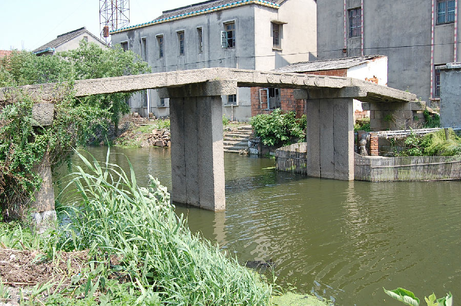
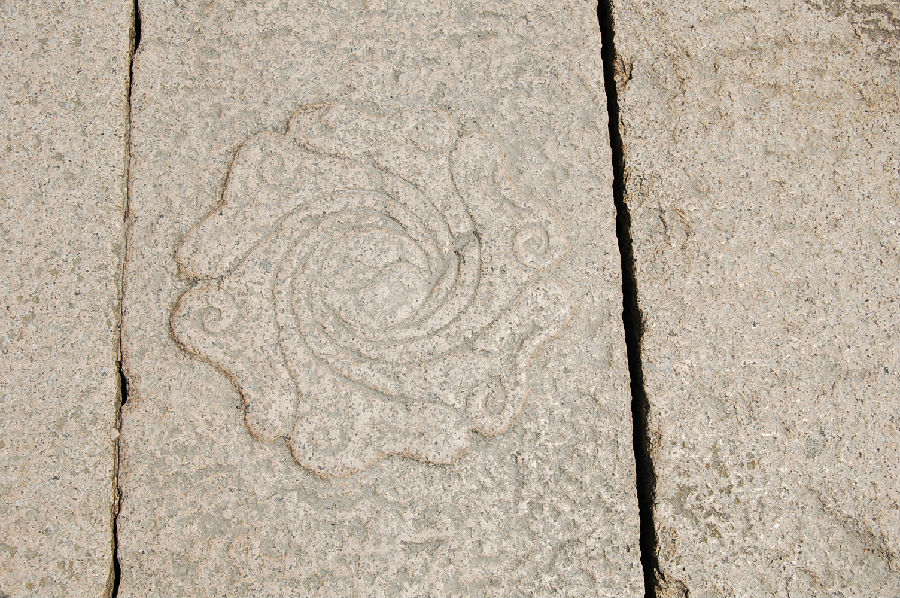

嘉兴市文物保护网 · 市级文物保护点 · 2020-11-03 · 原文


通济桥位于嘉兴市秀洲区油车港镇上睦村同联1组，据形制判断该桥为清代所建，南北横跨杨厍港，系三孔无栏梁式石板桥，桥全长20.56米，宽1.62米，桥面和桥柱均由3块条石组成，桥底距河面高度3.5米，南北各有石阶7级和10级。两侧桥额刻有“重建通济桥”，旁有祥云纹。东西桥联分别为：“束临风帆飞浦淑，西闻津鼓报陲亭”和“溪流几曲桑麻绕，虹影中横龙畝通”。桥面正中刻水涡纹，图案中心刻太极，桥身刻有“暗八卦”纹样。此桥形制完整，做工考究，纹饰、文字雕刻精美，具有较高的历史和艺术价值。2010年公布为嘉兴市文物保护点。